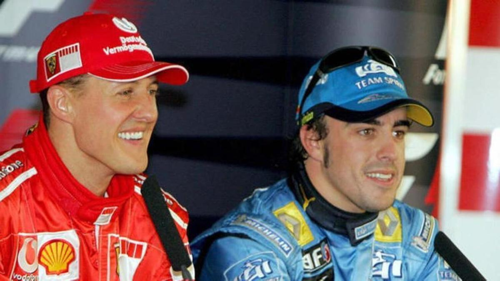
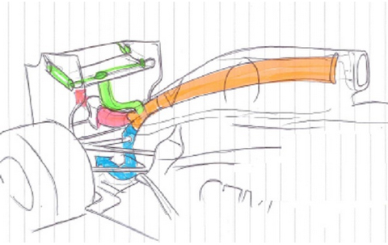

Orígenes
La Fórmula 1 nació oficialmente en 1950 con el primer Campeonato Mundial de Pilotos, que se celebró en el circuito de Silverstone, en Reino Unido. Ese año, el italiano Giuseppe "Nino" Farina se coronó como el primer campeón mundial a bordo de un Alfa Romeo. El origen de la Fórmula 1 está ligado a las carreras de Grand Prix de antes de la Segunda Guerra Mundial, que eran eventos populares en Europa con grandes fabricantes y pilotos legendarios.
Un dato curioso es que, en sus primeros años, la Fórmula 1 permitía que un piloto cambiara de coche durante la carrera, algo impensable hoy en día. Además, las carreras eran mucho más peligrosas y la seguridad era prácticamente inexistente, lo que convirtió a los pilotos en auténticos héroes de alto riesgo.

Décadas de evolución
A lo largo de las décadas, la Fórmula 1 ha experimentado una evolución impresionante en términos de tecnología, seguridad y espectáculo. Durante los años 50 y 60, figuras como Juan Manuel Fangio, cinco veces campeón mundial, dominaron la escena con su habilidad y valentía. Fangio sigue siendo una leyenda por su técnica y por ganar títulos con diferentes escuderías.
En los 70 y 80, la F1 se volvió más técnica y aerodinámica. Pilotos como Niki Lauda y Alain Prost no solo se destacaron por su velocidad, sino también por su inteligencia en la estrategia de carrera. También fue la época en la que Ayrton Senna emergió como uno de los pilotos más talentosos y carismáticos de todos los tiempos. Senna no solo fue famoso por su increíble destreza en condiciones adversas, sino que su trágica muerte en 1994 marcó un punto de inflexión para la seguridad en el deporte.
Durante los años 90 y principios del 2000, Michael Schumacher redefinió el concepto de dominio en la Fórmula 1 con siete campeonatos mundiales y un récord impresionante de victorias. Su etapa en Ferrari ayudó a consolidar al equipo italiano como una potencia dominante.
Fórmula 1 moderna
En la actualidad, la Fórmula 1 es una combinación de innovación tecnológica, marketing global y competencia extrema. Los monoplazas incorporan motores híbridos altamente sofisticados que equilibran potencia y eficiencia, reflejando una tendencia hacia la sostenibilidad. La rivalidad entre equipos como Red Bull, Mercedes y Ferrari atrae la atención de millones de aficionados en todo el mundo.
Un dato curioso del siglo XXI es la introducción del sistema de DRS (Drag Reduction System), que permite a los pilotos reducir la resistencia aerodinámica y facilitar los adelantamientos, aumentando la emoción de las carreras. Además, la Fórmula 1 ha expandido su calendario a nuevas regiones, incluyendo carreras en Medio Oriente y Asia, consolidando su estatus como un deporte verdaderamente global.
También se ha hecho un gran esfuerzo en la seguridad con innovaciones como el halo, un dispositivo protector alrededor del cockpit que ha salvado vidas desde su introducción en 2018.
Curiosidades y datos destacados
- El Gran Premio de Mónaco es uno de los más prestigiosos y antiguos, celebrado desde 1929, conocido por sus calles estrechas y curvas desafiantes.
- La Fórmula 1 es el deporte motorizado más visto del mundo, con una audiencia global que supera los 500 millones de espectadores por temporada.
- En 1958, la primera mujer, Maria Teresa de Filippis, participó en un Gran Premio de F1, abriendo camino para futuras generaciones de pilotos femeninas.
- La aerodinámica en la F1 es tan crucial que los equipos emplean túneles de viento y simuladores avanzados para mejorar cada detalle del diseño de sus coches.